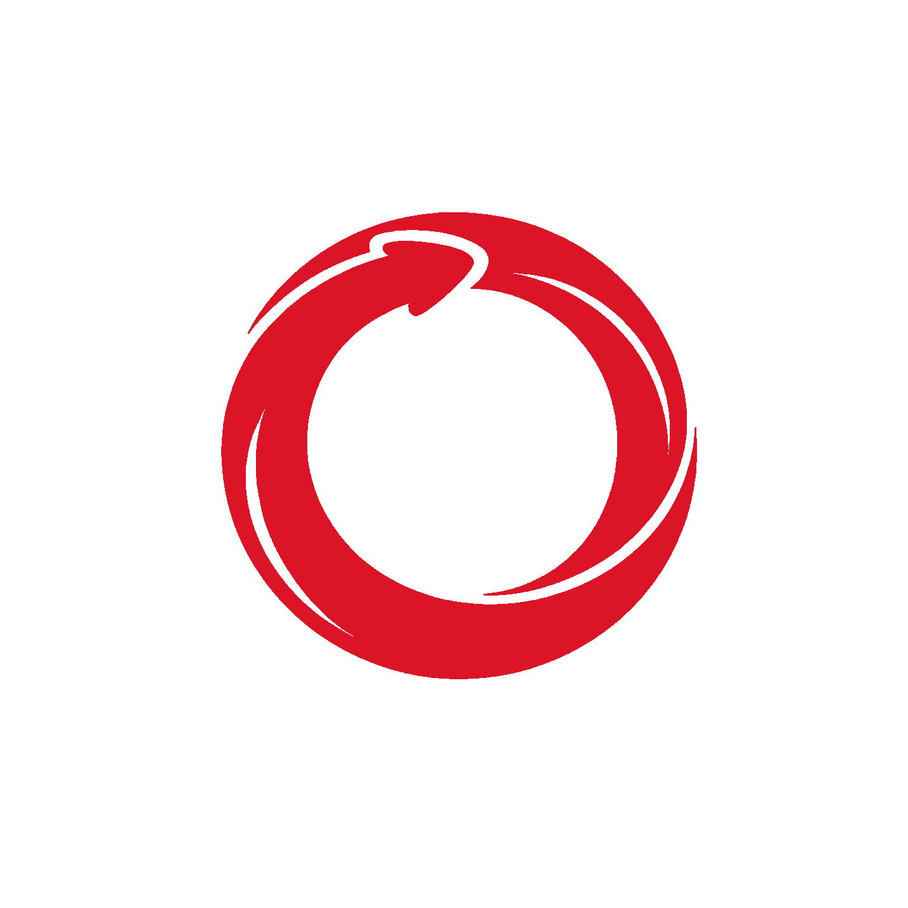

Orchestra
最強のマルチエージェントを搭載した、次世代 AI IDE
Powered by Division API
One prompt
1つのプロンプトで、
AIチーム
が動き出す。
↑
🎭 Division Project
✅ 承認モード
📊 コスト: 性能優先
Leader が分解し、
7つのロール
が分担する。
🧠
Leader
タスク分解・統括
🔍
Searcher
Web 検索・既存ファイル調査
🔬
Researcher
深い調査・アイデア出し
🎨
Designer
UI デザイン (HTML)
✍️
Writer
文章・仕様書
💻
Coder
実装
🔎
Reviewer
レビュー
Anthropic
OpenAI
Google
Perplexity
xAI
DeepSeek
ロールごとに最適なモデルを割り当て
ワークフローを、
図
で組む。
.division/workflow.json — 並列 · 承認 · for / while ループ
↻ while: テストが全部通るまで (最大 5 回)
開始
⫘ 並列
🔍 Searcher
既存コード調査
🔬 Researcher
論文 paper.md
🎨 Designer
design/*.html
✋ 承認
💻 Coder
🔎 Reviewer
完了
成果物を見て、直して、
承認
。
📖 paper.md
論文 · Researcher
📋 specification.md
仕様書 · Writer
🎨 design/index.html
デザイン · Designer
💻 src/quiz.ts
実装 · Coder
export function
score
( answers:
Answer
[], ) {
return
answers .
filter
(a => a.ok) .length; }
test
(
'score'
, () => {
expect
(…).
toBe
(
3
); });
✋ 承認待ち: specification.md
内容を編集してから承認すると、その内容で Coder に進みます。
✏️ 開いて編集
✓ 承認
✓ 承認しました — 次のステップへ
☰
リモートコントロール ▾
📄
ログイン画面も追加して
🧠 ワークフローを作りました。
Designer → Coder → Reviewer
⚠️
コマンドの実行
npm test
却下
承認
✅ テスト 24 件すべて成功
指示を入力…
📊 コスト
Orchestra Mobile
スマホから、
PC の
Orchestra
を操作。
📡
リモートコントロール
同じ LAN の IDE と直結。指示・中断・承認をその場で。
☁️
クラウドエージェント
PC がオフでも OK。最大 10 セッションを並列実行。
🗂
カンバン · 論文 · 仕様書
タスクの実行も、成果物の編集も手元で。
エージェントが、
最後まで
やり切る。
🌐
browser_use
実際の Chrome を操作して
動作確認
🩹
apply_patch
複数ファイルの変更を
全部か無しかで一括適用
✅
update_plan
計画をチェックリストで
ライブ表示
🗜️
自動コンパクション
長い会話も要約して
作業を継続
📜
AGENTS.md
ビルド手順や規約を
自動で読み込み
🔄
VS Code 互換
拡張機能・デバッグ・Git を
そのまま
Orchestra
あなたのアイデアに、AI のオーケストラを。
api.division.he-ro.io
クイズアプリを作って